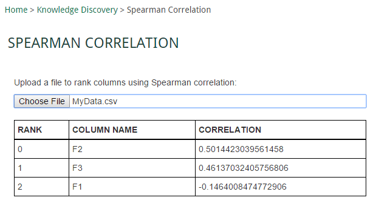

Data Mining: Spearman Feature Correlation HELP
This application uses Spearman Correlation to rank your data features.
Step 1
Click the "Choose File" button and navigate to a CSV file that contains your data.
Step 2
A popup will appear listing all your data columns. Select multiple columns by holding SHIFT while clicking on
all columns containing independant variables. Select your dependant variable by opening the dropdown and choosing
the column name. Click "Ok".
Step 3
A table should appear containing each independant variable column, its ranking, and its correlation with the
dependant variable.
